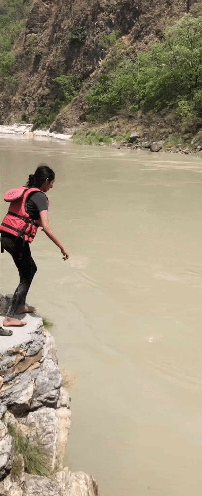

Muskaan Chandra - World Wide Technology
Hii everyone welcome to my oversharing blog, I'm gonna be taking you through my experience as a Data Science Consulting Intern at World Wide Technology and the process that led up to it. Before beginning to read just remember: If brevity is the soul of wit, I am not witty. (tldr nahi milega)
Executive summary or something
Muskaan, Elec DD, also Chief Ed at Insight, intern season made me want to die have a phone call with God, I had the coolest two months of my life in which I umm jumped off a cliff, wrote a ton of code, had the best ice cream ever and spent 15 hours making a 5 minute presentation 😀
Now let's dive right in! (Credits to Madhumitha's mom for the joke)
Death
So, I had a pretty terrible start with intern season. I attended the Software Intern workshop and learnt that I will never get an internship in my life because I know nothing about coding and I am in dual degree. I attended the Finance Intern workshop and learnt a bit about the interview process and that I will never get an internship because DD. I did not attend the Consult Intern workshop.
I was basically frozen and stressed and in despair, nothing seemed to help, I used to scroll through InstiApp at 4AM like a zombie but did absolutely nothing to prepare. Once the resume deadline rolled over, I used my ~Insight Editor and ex-Lit con~ skills to write "fancy"-sounding points and resolved to increase my CPI that sem (it did not).
Rebirth
I got two shortlists throughout the season.
One was an FMCG firm, which I was very proud of
because before the shortlist, we filled out a
form talking about our skills and values and in
the "Advanced Knowledge or Special Skills"
question I wrote nail art… Anyway I got
rejected
Around a month and a half later, I received some
very perspective-changing advice. "Play the long
game. The purpose of intern season isn't to land
an internship, it's to develop the skill of
finding internships that you think are valuable.
And if at the end of one year you don't have
one, it's really not going to matter as long as
you've understood how to search for one, how to
ask the right questions to yourself (and others)
to figure out what you like, and learnt things
that will help you for the rest of your
professional life, not just the next recruitment
season."
A week after this I was offered an internship at
World Wide Technology (WWT).
Things really did go uphill after that, because
for the winters I also managed to become part of
a fellowship program related to fintech policy,
something I'd wanted to try out since ages.
Living
The internship was offline, and all I can say is– Gurgaon is a major vibe. Extremely pretty places, great DJs and random tiny chaat stalls really added to our first "adulthood experience".
Despite the profile name, our projects were quite Data Science-centric and WWT ensured an enriching experience for us by assigning us all R&D projects so we could spend time exploring different possibilities without the pressure of targets and deadlines. I worked mainly on audio and video analytics and got a bit of exposure to MLOps. I also learnt a great deal about the different ways in which deep learning-based solutions are created for clients. The "Consulting" part of Data Science Consulting came in because we were able to have one-on-one chats with pretty much everybody on the WWT team - right from data engineers and sustainability analysts, to operations and HR, to, well, consultants and engagement managers.
One of the most insightful conversations I had was when I asked for feedback from my project manager, who also happened to be the firm's Chief Data Scientist. A 15-minute chat with him completely transformed my perspective on what it means to debug, to understand what data tries to tell us, and to be a data scientist.
All in all, it seemed like the perfect way to spend a summer and was the first time in months that I didn't have something new to stress about every week. The work-life balance was great and the team had very fun people – they even organised a trip to Rishikesh (hence the cliff-jumping).
oldEr and Wiser
Coming to things I could have done better, I do wish I had been more confident in the start of the internship itself (we are not mentioning intern season again) and initiated more conversations myself. I would have also loved more time to try out things in my project that I didn't get to by the end of 8 weeks.
Something y'all should keep in mind is that an internship (and life i guess??) will be a lot more valuable if you think of it as discovering your capability of driving things the way you want them to be (as opposed to waiting for the perfect company, perfect role, perfect team). This is exactly why it doesn't matter as much where you end up interning (or anything else you decide to do next summer) - it's a lot more about what you can make of it.
Here's also some out-of-context advice from my DMs.

I'd encourage you to be more mindful of what you're doing, and spend more time thinking about what you want from life, aside from just your career. Think about the kind of lifestyle you might want, the work culture that aligns with it, what sort of compromises you might be willing to make and the kind of career growth you're looking for.
Also, if I had read this blog last year I would've definitely said something like "wth is growth I just want to chill". So if you don't feel like doing anything at the moment, just give yourself time. The things you want out of life will keep changing. Everything is temporary – likes, dislikes, moods, aspirations, meme accounts, thoughts and perspectives.